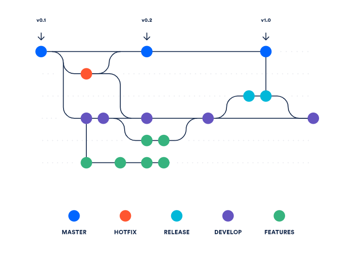
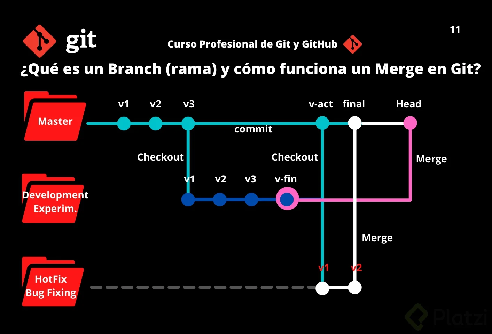
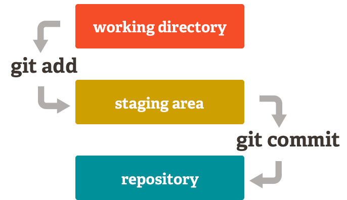
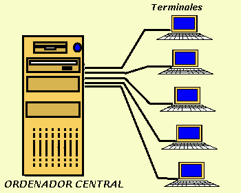

1. ¿Qué es un control de versiones?
El control de versiones es un sistema que permite gestionar los cambios en un conjunto de archivos, facilitando la colaboración en proyectos y la gestión de versiones en el tiempo.
2. ¿Qué es GIT?
GIT es un sistema de control de versiones distribuido que permite a los desarrolladores rastrear los cambios en el código fuente durante el desarrollo de software.

3. ¿Qué es un repositorio?
Un repositorio es un lugar donde se almacenan los archivos y el historial de cambios de un proyecto. Existen repositorios locales (en tu máquina) y remotos (en servidores, como GitHub).

4. ¿Qué es GITHUB?
GitHub es una plataforma basada en la web que utiliza Git para el control de versiones y proporciona funcionalidades adicionales como colaboración, revisiones de código y gestión de proyectos.

5. ¿Qué es una rama en GIT y para qué sirve?
Una rama en GIT es una línea de desarrollo independiente que permite trabajar en características, correcciones o experimentos sin afectar la rama principal (main o master). Facilita el trabajo paralelo y la integración de cambios.
6. ¿Cuáles son los estados en GIT?
En GIT, los archivos pueden estar en tres estados: modificado (ha cambiado desde el último commit), staged (preparado para ser incluido en el próximo commit) y committed (guardado en el historial del repositorio).
7. ¿Qué es la terminal, consola o línea de comandos y para qué sirve?
La terminal, consola o línea de comandos es una interfaz de texto que permite a los usuarios interactuar con el sistema operativo y ejecutar comandos para gestionar archivos y ejecutar programas.
8. Funcionamiento de comandos de la terminal
ls- Lista los archivos y directorios en el directorio actual.cd <directorio>- Cambia el directorio actual al especificado.cd ..- Sube un nivel en la jerarquía de directorios.pwd- Muestra la ruta del directorio actual.mkdir <nombre>- Crea un nuevo directorio con el nombre especificado.touch <nombre>- Crea un nuevo archivo vacío o actualiza la fecha de modificación de un archivo existente.rm <nombre>- Elimina el archivo especificado.cp <nombre> <directorio>- Copia un archivo al directorio especificado.mv <nombre> <directorio>- Mueve un archivo al directorio especificado o cambia el nombre del archivo.